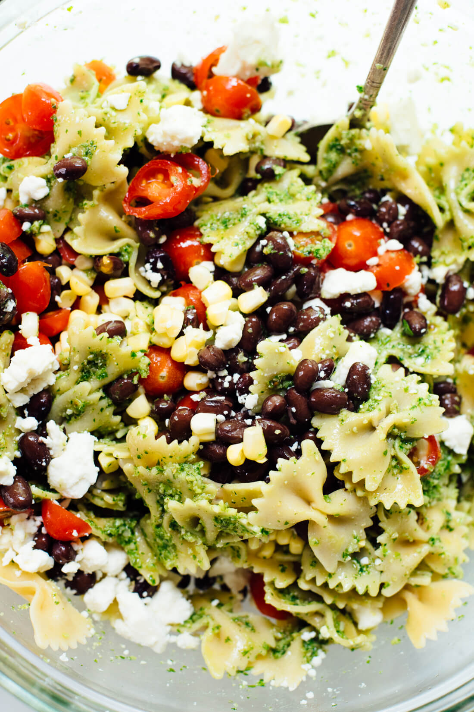

Summertime Pasta Salad

Description
This healthy pasta salad features bold summer flavors, including tomatoes, corn and black beans tossed in spicy,
fresh pesto! It’s a great vegetarian side dish for potlucks and barbecues.
Ingredients
- Pasta of your choice
- Black beans
- Cherry tomatoes
- Fresh corn
- Feta
- Jalapeno pesto
Steps
- Prepare boiling water for pasta, keep some cooking water.
- Once the pasta are cooked, mix with pesto and a splash of cooking water and toss well.
- Transfer the pasta to a serving bowl and add the black beans, cherry tomatoes and feta.
- stir until combined. Tastes better if you let it marinated for 30 minutes but feel free to enjoy it now.